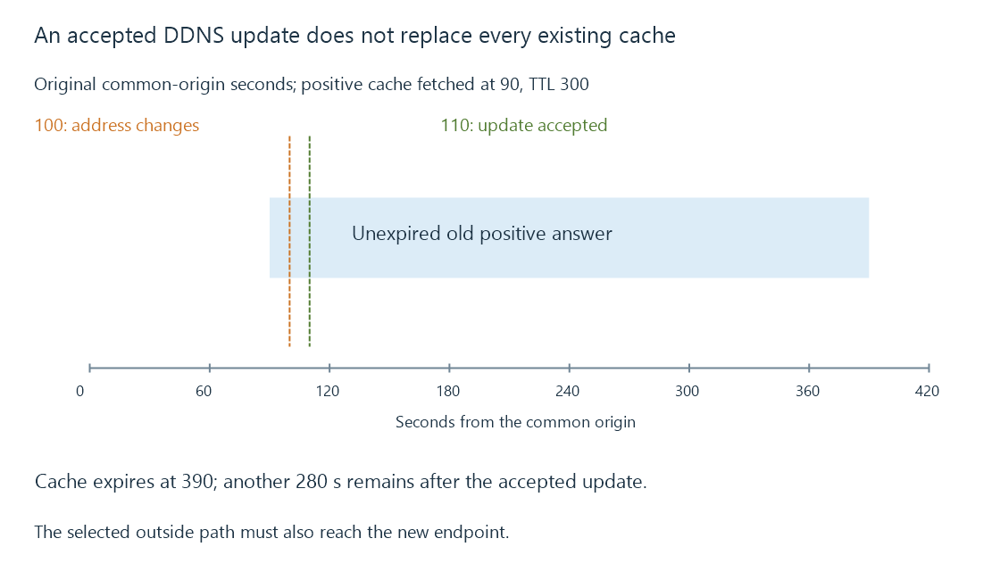

Dynamic DNS and a changing server address
Dynamic DNS updates a name’s address records when the represented endpoint changes, while caches and the actual inbound network path retain independent lifetimes.
A household connection can receive a new outside address while its preferred server hostname stays the same. Dynamic DNS, or DDNS, updates the relevant records so that hostname can lead to the new endpoint.
The update changes descriptive DNS data. It does not move an existing connection or create a missing inbound route.
Four times identify the transition
Use this original timeline, with documentation address labels:
{
"oldAddress": "198.51.100.12",
"newAddress": "203.0.113.44",
"cacheFetchedAt": 90,
"cachedTtlSeconds": 300,
"addressChangedAt": 100,
"authoritativeUpdateAcceptedAt": 110
}
Times are seconds from one common origin. The original cache expires at second 390.
From second 110, newly obtained authoritative data can describe the new address. The already cached positive answer can remain valid for another 280 seconds in this ordinary cache model.

An updater’s successful response therefore establishes one stage of the transition. It is not a push notification that replaces every client’s retained answer.
The updater must report the intended endpoint
A server behind a home gateway has a private LAN address as well as the gateway’s outside endpoint. Behind another translation layer, the gateway’s WAN address can itself be shared or private.
Updating a public-facing hostname to the wrong layer’s address can make the DNS operation succeed while producing an unusable destination for outside clients.
The source of the address observation and the intended connection path must agree. Carrier-grade NAT explains why the outside translation may not be under household control.
IPv4 and IPv6 records change separately
Changing an A record does not automatically change an AAAA record. The two address families may also have different lifetimes or reachability.
A newly correct IPv4 answer alongside a stale IPv6 answer can produce different app outcomes according to the family selected.
Similarly, changing a CNAME target introduces the lifetimes of the alias and relevant target records. The hostname remaining visually unchanged does not collapse those records into one universal cache item.
Update protocol and provider interface are different layers
RFC 2136 defines DNS UPDATE. A commercial or self-hosted DDNS interface can instead accept an authenticated API request and perform its own DNS changes.
An accepted provider request, publication of the authoritative record and later recursive lookup are separate observations. The implementation determines how promptly they converge.
This distinction is useful without copying a provider’s credential-bearing update URL into a diagnostic record.
Recheck the service destination after the name transition
Emby can advertise a configured external domain. The remote URL still needs the intended scheme and port, and the new address must lead through the actual route, mapping and listener.
A correct new DNS answer cannot supply an inbound mapping inside somebody else’s carrier gateway. It can accurately name an endpoint that remains unreachable.
See Also
- DNS resolution, record types and cached answers
- Carrier-grade NAT and control of inbound mappings
- Port forwarding and the complete inbound path
- Emby Connect and the path to the selected server